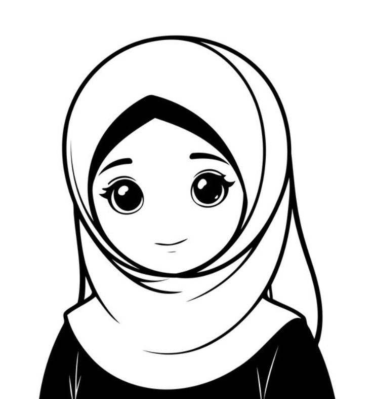

Contact
Let’s connect! I’m always interested in discussing new projects and opportunities.

Information Technology Student • Aspiring Web Developer • Building Technology Solutions Through Learning
View Featured ProjectsI am a junior pursuing a Bachelor’s degree in Information Technology at George Mason University, with a strong interest in technology, web development, programming, and creating solutions that combine functionality with user-focused design. As I continue building my technical skills, I enjoy exploring areas such as front-end development, database systems, and software development while applying what I learn through hands-on academic and personal projects. My mission is to continuously grow as a technology professional by developing innovative solutions, expanding my problem-solving abilities, and gaining practical experience that prepares me for a career in the technology industry. Through my coursework and projects, I strive to build applications and systems that are efficient, accessible, and meaningful to users. This portfolio showcases my learning journey, technical projects, and progress as I continue strengthening my skills and exploring opportunities within the field of Information Technology.
Here are some of my most recent projects. Visit the Projects page to explore my complete portfolio and see more of my academic and personal work.
AI-powered chatbot developed using the OpenAI API and Cloudflare Workers to provide personalized beauty recommendations through a secure, responsive, and accessible conversational interface.
Interactive web application that connects to NASA's Astronomy Picture of the Day API to display space imagery by date range, featuring responsive galleries, modal previews, and real-time API data.
Educational browser game designed to encourage environmental awareness through interactive cleanup missions, multiple difficulty levels, scoring mechanics, timers, and engaging visual feedback.
Let’s connect! I’m always interested in discussing new projects and opportunities.